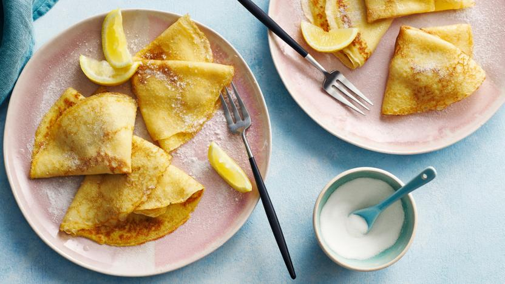

Pancakes
Home

Description
What's the secret to making the perfect pancakes? Trust Delia Smith to show you and enjoy Pancake Day without any flops. Delia's method uses milk and water for really thin, lacy edges. With added melted butter for flavour, these thin British pancakes taste best with drizzled with lemon juice and sprinkled with crunchy, granulated sugar.
Each pancake (without topping) provides 88kcal, 7.5g carbohydrates (of which 0.9g sugars), 5g fat (of which 2g saturates), 0.4g fibre and 0.2g salt.
Ingredients
For the Mix
- 110g/4oz plain flour, sifted
- pinch of salt
- 2 eggs
- 200ml/7fl oz milk mixed with 75ml/3fl oz water
- 50g/2oz butter
To Serve
- caster sugar
- lemon juice
- lemon wedges
Method
- Sift the flour and salt into a large mixing bowl with a sieve held high above the bowl so the flour gets an airing.
- Now make a well in the centre of the flour and break the eggs into it. Then begin whisking the eggs – any sort of whisk or even a fork will do – incorporating any bits of flour from around the edge of the bowl as you do so.
- Next gradually add small quantities of the milk and water mixture, still whisking (don't worry about any lumps as they will eventually disappear as you whisk).
- When all the liquid has been added, use a rubber spatula to scrape any elusive bits of flour from around the edge into the centre, then whisk once more until the batter is smooth, with the consistency of thin cream.
- Now melt the 50g/2oz of butter in a pan.
- Spoon two tablespoons of the butter into the batter and whisk it in, then pour the rest into a bowl and use it to lubricate the pan, using a wodge of kitchen paper to smear it round before you make each pancake.
- Now get the pan really hot, then turn the heat down to medium and, to start with, do a test pancake to see if you're using the correct amount of batter. I find two tablespoons is about right for an 18cm/7in pan. It's also helpful if you spoon the batter into a ladle so it can be poured into the hot pan in one go.
- As soon as the batter hits the hot pan, tip it around from side to side to get the base evenly coated with batter. It should take only half a minute or so to cook; you can lift the edge with a palette knife to see if it's tinged gold as it should be.
- Flip the pancake over with a pan slice or palette knife – the other side will need a few seconds only – then simply slide it out of the pan onto a plate.
- Stack the pancakes as you make them between sheets of greaseproof paper on a plate fitted over simmering water, to keep them warm while you make the rest.
- To serve, sprinkle each pancake with freshly squeezed lemon juice and caster sugar, fold in half, then in half again to form triangles, or else simply roll them up. Serve sprinkled with a little more sugar and lemon juice and extra sections of lemon.